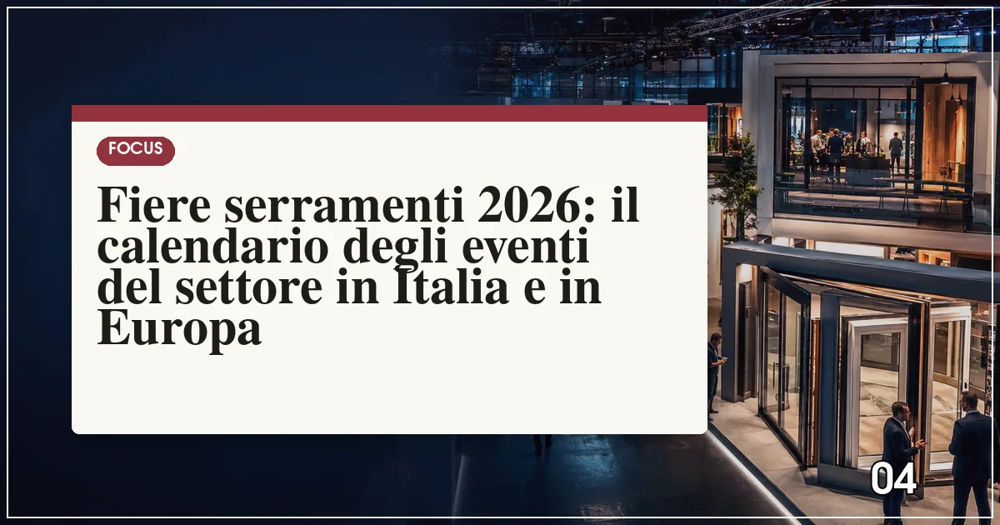

Le principali fiere dei serramenti del 2026 sono: Klimahouse a Bolzano (gennaio), Fensterbau Frontale a Norimberga (marzo), il SAIE a Bologna (ottobre), il MADE Expo e MIBA a Milano, VETECO a Madrid (novembre) e glasstec a Düsseldorf (ottobre). Le date precise vanno verificate sui siti ufficiali.
In sintesi
- Klimahouse a Bolzano apre l'anno con il focus su efficienza energetica e involucro.
- Fensterbau Frontale a Norimberga è il salone europeo di riferimento per finestre e serramenti.
- SAIE Bologna e MADE Expo Milano coprono costruzioni, materiali e involucro edilizio.
- glasstec Düsseldorf è l'appuntamento mondiale per il vetro e le sue lavorazioni.
- Le date vanno sempre verificate sui siti ufficiali: i periodi indicati sono orientativi.

Le fiere restano, anche nell'era digitale, il termometro più affidabile del settore: è sui padiglioni che i produttori presentano i sistemi nuovi, i serramentisti toccano con mano profili e ferramenta, e i progettisti costruiscono la cultura materica dei loro progetti. Per chi lavora nell'involucro edilizio — e per il privato curioso che vuole capire dove sta andando il mercato prima di cambiare casa — il 2026 offre un calendario ricco, tra appuntamenti italiani consolidati e grandi saloni europei.
Abbiamo ricostruito il calendario degli eventi più rilevanti per il mondo dei serramenti, con una precisazione metodologica: le date indicate sono orientative, basate sulle cadenze storiche di ciascun evento, e vanno sempre verificate sui siti ufficiali degli organizzatori prima di pianificare viaggi e visite.
Il calendario 2026 delle fiere dei serramenti
| Fiera | Sede | Periodo indicativo | Focus |
|---|---|---|---|
| Klimahouse | Bolzano | Fine gennaio | Efficienza energetica, involucro, casa passiva |
| Fensterbau Frontale | Norimberga (DE) | Marzo | Finestre, porte, facciate, ferramenta, macchinari |
| SAIE | Bologna | Ottobre | Costruzioni, materiali, tecnologie per l'edilizia |
| MADE Expo | Milano Rho | Autunno (edizione da confermare) | Materiali, involucro, architettura |
| MIBA | Milano | Autunno | Involucro edilizio, chiusure, costruzione a secco |
| VETECO | Madrid (ES) | Novembre | Finestre, facciate e protezione solare per il mercato iberico |
| glasstec | Düsseldorf (DE) | Ottobre (anni pari) | Vetro, lavorazioni, tecnologie vetrarie |
Nota: alcune manifestazioni hanno cadenza biennale o calendari in fase di definizione; i periodi sono indicativi e le date ufficiali si trovano sui siti degli organizzatori.
Le fiere italiane: da Bolzano a Bologna
Klimahouse a Bolzano resta l'appuntamento che apre l'anno: nato attorno alla cultura della casa passiva e dell'efficienza energetica, è la fiera dove il serramento è protagonista assoluto — profili, vetri, posa e schermature — con un pubblico misto di professionisti e privati attenti alla riqualificazione. Il SAIE di Bologna copre l'intera filiera delle costruzioni e dedica all'involucro uno spazio crescente, tra materiali innovativi e cantieristica digitale. A Milano, il MADE Expo e l'evento dedicato all'involucro MIBA rappresentano il punto di incontro tra architettura e prodotto: è qui che si leggono in anteprima le tendenze di design che arriveranno nei cataloghi degli anni successivi.
Le fiere europee: Norimberga, Madrid, Düsseldorf
Per chi vuole la visione d'insieme europea, tre saloni sono imprescindibili. Fensterbau Frontale a Norimberga è la fiera-madre del settore: profilati in PVC e alluminio, vetro, ferramenta, guarnizioni, macchinari per la produzione e software, con i grandi sistemisti che presentano le piattaforme del futuro. VETECO a Madrid è la porta sul mercato iberico e sulle soluzioni per il controllo solare, tema caldo per l'Europa mediterranea. glasstec a Düsseldorf, infine, è il punto di riferimento mondiale per il vetro: dai tripli vetri ultraleggeri ai vetri elettrocromici che stanno cambiando le finestre smart, è lì che si misura l'innovazione vetraria.
Cosa aspettarsi dalle edizioni 2026
Tre filoni, secondo le anticipazioni raccolte dalla redazione, domineranno i padiglioni di quest'anno. Primo, l'efficienza estiva: schermature integrate, vetri a controllo solare e soluzioni contro il surriscaldamento, coerenti con la spinta della direttiva Case Green. Secondo, la circolarità: profili con contenuto riciclato certificato e dichiarazioni EPD esposte come argomento commerciale, un trend che raccontiamo nell'articolo sulla sostenibilità e il riciclo del PVC. Terzo, la digitalizzazione del cantiere: dal rilievo laser alla documentazione di posa, con la norma UNI 11673 sempre più presente nei discorsi da stand. Sullo sfondo, il clima di mercato descritto nelle previsioni UNICMI per il 2026: stabilizzazione e ricerca di nuovi equilibri.
Come preparare la visita: cinque consigli pratici
- Definite un obiettivo: cercare un fornitore, confrontare sistemi o aggiornarsi sulle norme richiedono percorsi diversi.
- Prenotate gli incontri: i key account dei produttori hanno agende piene; l'appuntamento evita le attese.
- Portate i progetti: misure e sezioni del vostro caso concreto rendono utili i colloqui tecnici.
- Seguite i convegni: le sessioni su normativa e certificazioni valgono spesso il viaggio.
- Verificate date e biglietti sui siti ufficiali: molte fiere prevedono sconti per l'acquisto anticipato online.
Domande frequenti sulle fiere dei serramenti 2026
Quali sono le principali fiere dei serramenti in Italia?
Le principali fiere italiane per il settore serramenti sono Klimahouse a Bolzano, dedicata all'efficienza energetica, il MADE Expo a Milano per materiali e involucro, il SAIE a Bologna per le costruzioni e MIBA, l'evento milanese dedicato all'involucro edilizio e alle chiusure.
Quando si tiene il MADE Expo 2026?
Il MADE Expo si tiene tradizionalmente a Milano, alla fiera di Rho, con cadenza che negli ultimi anni ha visto edizioni concentrate in autunno. Per le date ufficiali dell'edizione 2026 consultare il sito dell'organizzatore: il nostro calendario riporta i periodi indicativi da verificare.
Qual è la fiera dei serramenti più importante in Europa?
La fiera di riferimento europea per finestre e serramenti è Fensterbau Frontale di Norimberga, evento biennale che riunisce produttori di profili, vetro, ferramenta e macchinari. Per il vetro il salone leader è glasstec di Düsseldorf, mentre VETECO di Madrid copre il mercato iberico.
Le fiere dei serramenti sono aperte anche ai privati?
La maggior parte delle fiere di settore è riservata agli operatori professionali, ma alcune — come Klimahouse a Bolzano — prevedono giornate o aree aperte anche al pubblico e ai privati interessati alla riqualificazione della propria casa. Verificate la politica di accesso sul sito di ciascun evento.
Fonti e riferimenti ufficiali
Le informazioni di questo articolo fanno riferimento alla documentazione ufficiale degli enti competenti. Verifica sempre gli aggiornamenti sulle fonti primarie prima di prendere decisioni.